La méthode Tiango, du site à visiter au retour du groupe
Huit moments, un seul dossier. Ce que vous saisissez une fois sert ensuite partout, sans ressaisie.
-
Un mois avant
Créer le site à visiter
Un site, c'est ce que vous faites visiter : la Pointe du Grouin, le port de la Houle, une chapelle, un musée. Vous le rangez par lieu, ici Cancale.
- À la main, avec ce que vous savez déjà : seuls les champs utiles se remplissent.
- Avec une IA : Tiango prépare la consigne, vous la donnez à l'assistant de votre choix, il rédige, Tiango range la réponse dans la fiche.
- La fiche réunit horaires, jours de fermeture, tarifs groupes, guide obligatoire ou non, accès en fauteuil, dépose des autocars.
- Un jour de fermeture ambigu est signalé « à confirmer », jamais deviné.
À savoir sur l'IA. Tout contenu produit par une IA doit s'accompagner de ses sources, et Tiango les demande. Mais même avec des sources, une IA peut se tromper : horaires, dates, noms. Revérifiez toujours avant de le dire à un groupe.
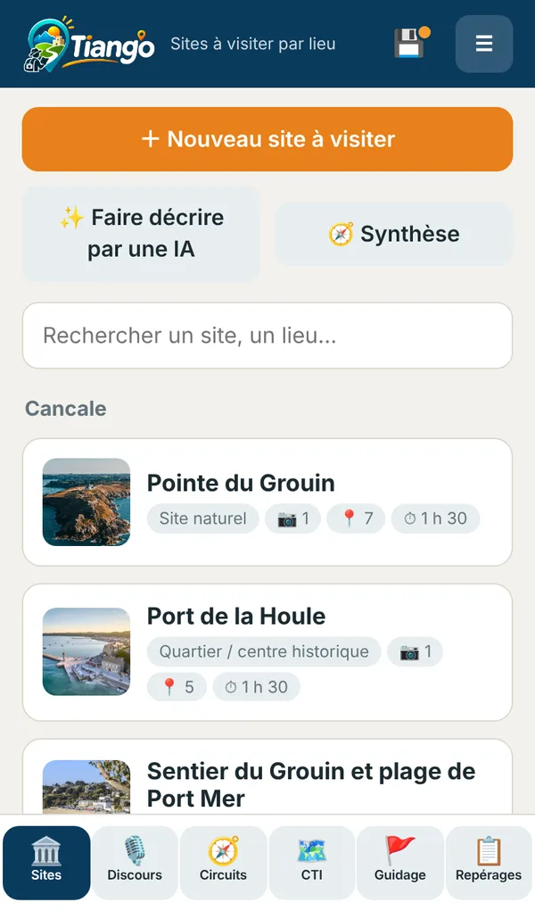
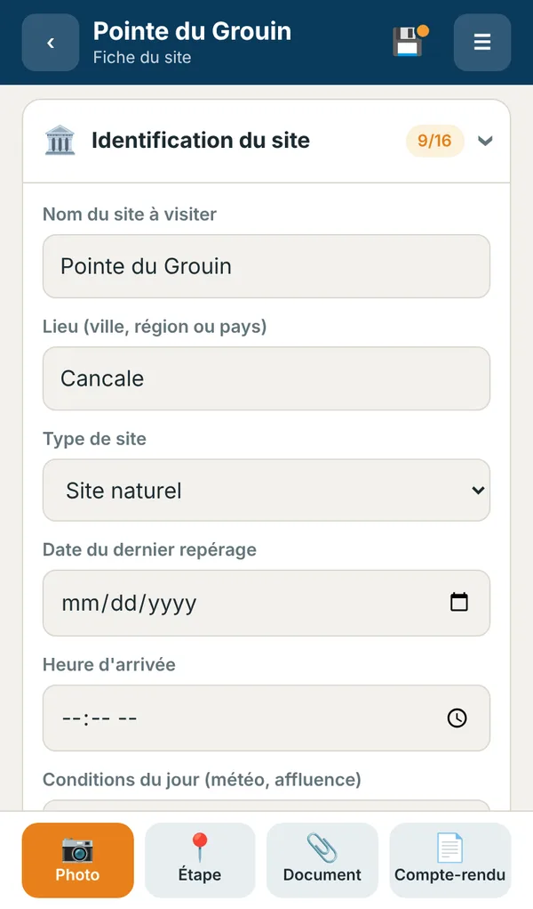
-
Un mois avant
Y placer les points où l'on s'arrête
Un site contient des étapes : l'accueil du groupe, le sémaphore, le point de vue sur l'île des Landes… C'est la brique de tout le reste.
- Chaque étape a son nom, ses observations, un temps à prévoir en minutes.
- Les photos se rangent dans l'étape, avec l'heure et la position GPS.
- Sur la Pointe du Grouin : sept étapes, de 10 à 15 minutes chacune.
- La durée d'une étape se corrige une fois : elle suit partout, dans le discours et dans les circuits.
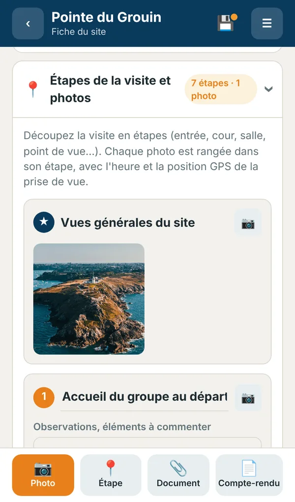
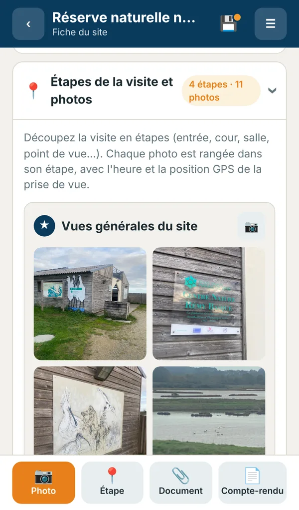
-
Un mois avant
Repérer les sites, puis écrire le discours
Sur place, à une main : durée chronométrée, constat, photo, position, étape par étape. Au retour, vous cochez ce qui met à jour la fiche.
- Un repérage peut couvrir tous les sites d'un circuit, avec une rubrique par site.
- Le discours se construit à partir des points de chaque site : un module par étape, relié à elle.
- Plusieurs langues : un bouton pour passer du français à l'anglais ou à l'espagnol.
- Anecdotes avec leur statut (fait documenté, tradition, légende), questions fréquentes, plan B, phrases à ne pas dire, sources.
- Une étape ajoutée au site après coup est signalée dans le discours : « 1 point du site sans discours ».
Ce que vous direz dans chaque langue peut se préparer après le circuit : le site, ses étapes et ses durées suffisent pour construire la journée.
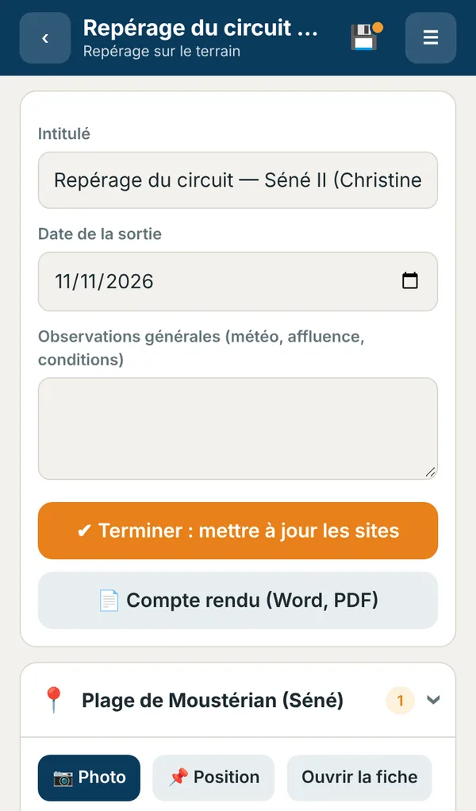
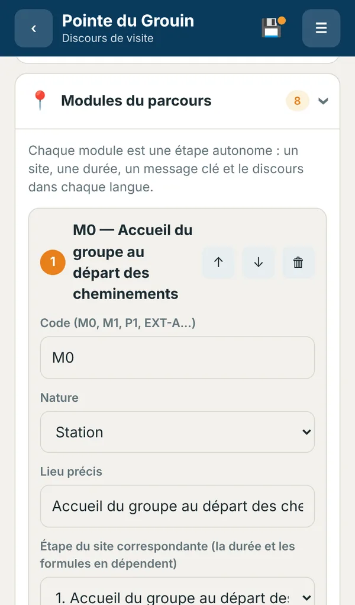
-
Un mois avant
Assembler les points en formules
Une formule est un choix d'étapes du site, dans un ordre, pour une durée. Vous la réglez une fois sur la fiche du site, elle sert dans tous les discours et circuits.
- Pointe du Grouin, découverte sélective : six des sept étapes, 1 h 15. On saute le point de vue occidental.
- Visite intégrale commentée : les sept étapes, 1 h 30.
- Visite intégrale et déjeuner panoramique : les sept étapes, puis une pause de 75 minutes après l'observation de l'île des Landes, à l'endroit où le groupe déjeune vraiment.
- Le discours reprend chaque formule en modules, dans l'ordre : « M0 → M1 → M2 → M4 → M5 → M6 ».
Même site, trois groupes, trois durées : vous choisissez la formule selon le temps dont vous disposez, sans réécrire quoi que ce soit.
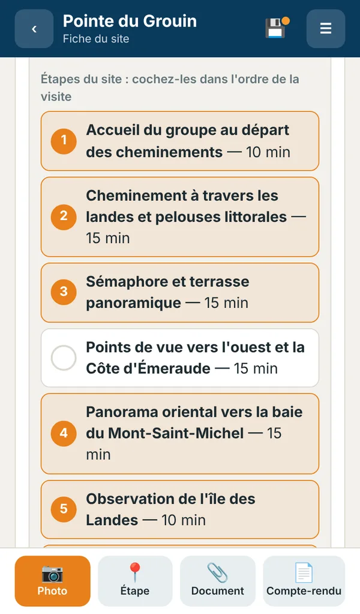
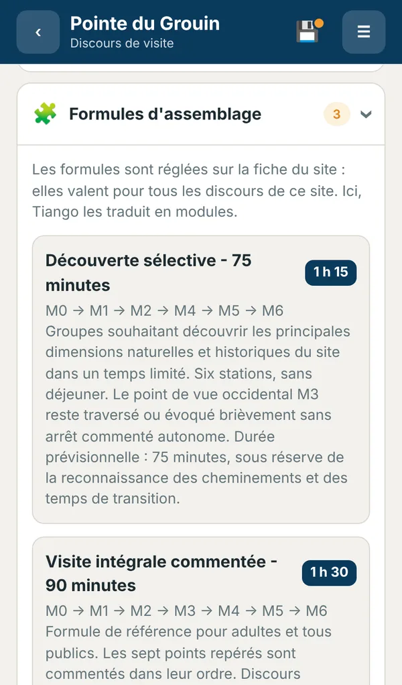
-
Quinze jours avant
Composer le circuit, puis le cadre technique d'itinéraire
Le circuit assemble des sites, une formule par site, des repas, des pauses, des hébergements. Le CTI en fait le déroulé minuté d'un groupe réel.
- Un déjeuner ou une pause peut être placé après une étape précise d'un site : le déroulé se coupe au bon endroit.
- Verdicts en tête du circuit : accessible en fauteuil, accessible en autocar, avec les sites en cause.
- Du circuit au CTI : un CTI par jour, avec les arrêts détaillés étape par étape, les trajets, les kilomètres.
- Horaires impératifs : la table de 12 h 15, le bateau. Tiango calcule l'attente et signale ce qui ne tient pas.
- Un dossier par étape : bon, confirmation, date limite, effectif, consignes. Et une vérification avant le départ.
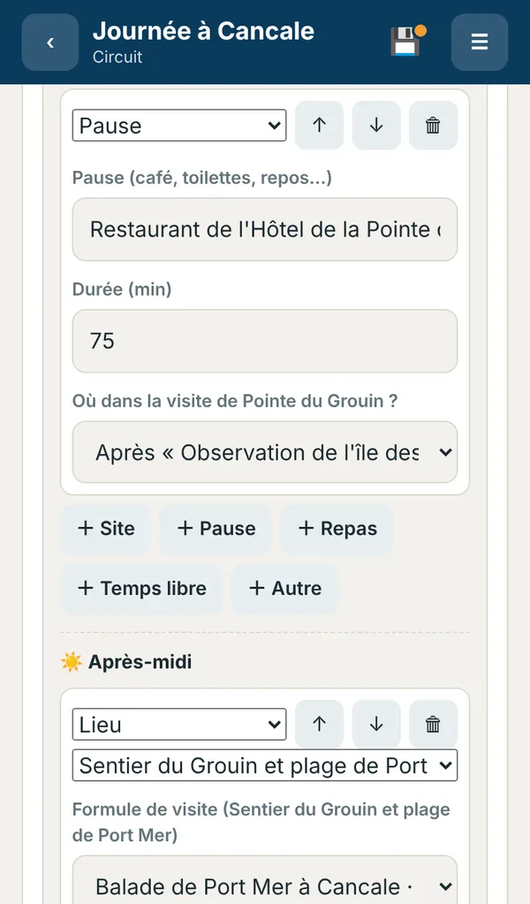
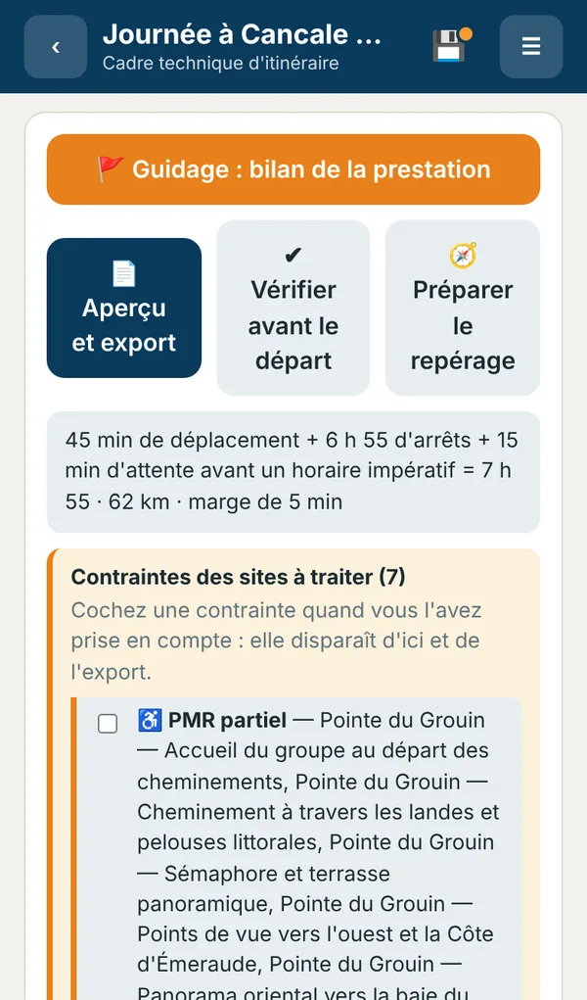
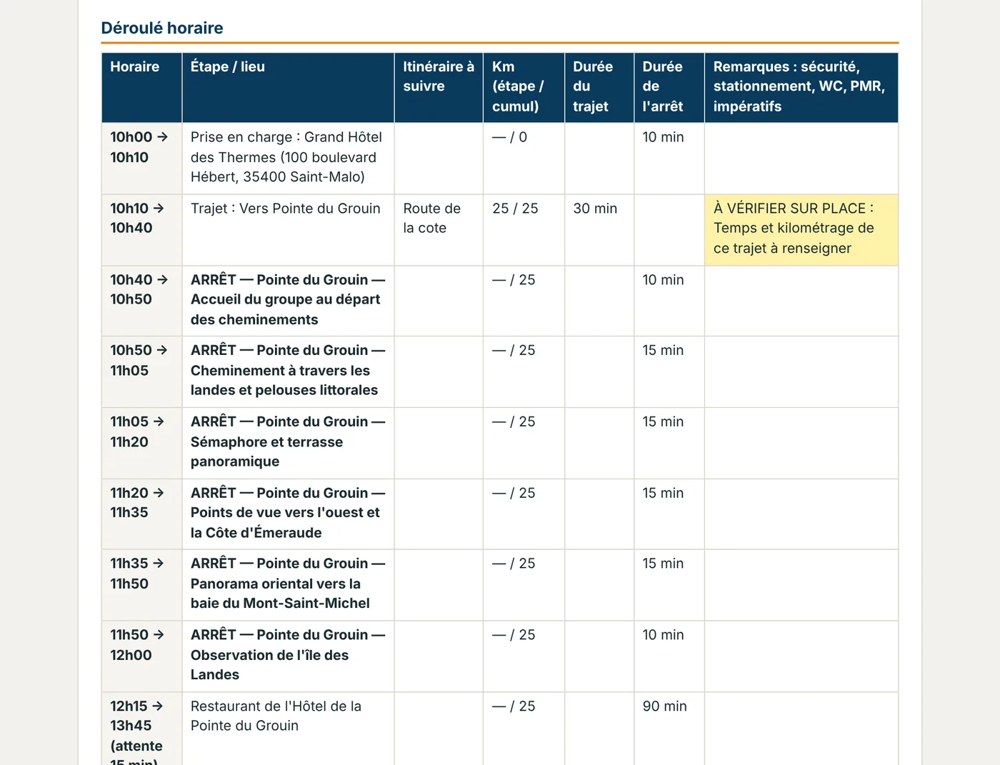
Le même CTI, tel qu'il sort en Word ou en PDF au format paysage. Les cases jaunes restent à vérifier sur place. -
Une semaine avant
Chiffrer, puis fixer votre prix
Vous saisissez les coûts poste par poste, par personne ou en forfait pour le groupe. Ce n'est pas forcément la veille : une semaine avant laisse le temps de négocier.
- Coût total et coût de revient par participant payant.
- Trois propositions de prix selon le taux de marge que vous réglez.
- Pour le prix retenu : la marge, le seuil de rentabilité, et ce qu'elle devient si le groupe est plus petit.
- Un poste sans montant est signalé : le total n'est jamais présenté comme complet s'il ne l'est pas.
Tiango ne traite pas la TVA.
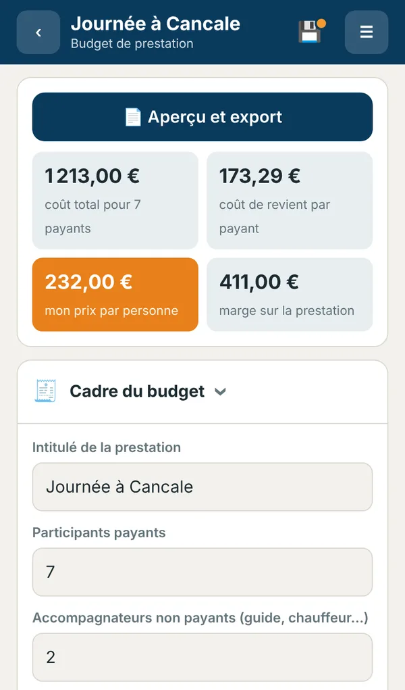
-
Le jour de la prestation
Conduire, avec l'heure sous les yeux
Chaque CTI a son guidage, prêt avec tout ce que vous avez saisi. Une étape à la fois, Tiango compare l'heure du téléphone au prévu.
- Retard ou avance, temps restant sur l'étape, heure de fin projetée.
- Horaire impératif protégé : en cas de retard, Tiango propose de raccourcir seulement les arrêts qui précèdent la table ou le bateau.
- Depuis l'arrêt : le discours de l'étape, la fiche du site, les contacts, le comptage du groupe, des consignes en six langues.
- Un arrêt déplacé, un restaurant qui change : vous corrigez dans le guidage, sans toucher au CTI de référence.
- Le guidage s'imprime en PDF ou en Word, avec tous les discours dans la langue choisie : toute la prestation sur papier.
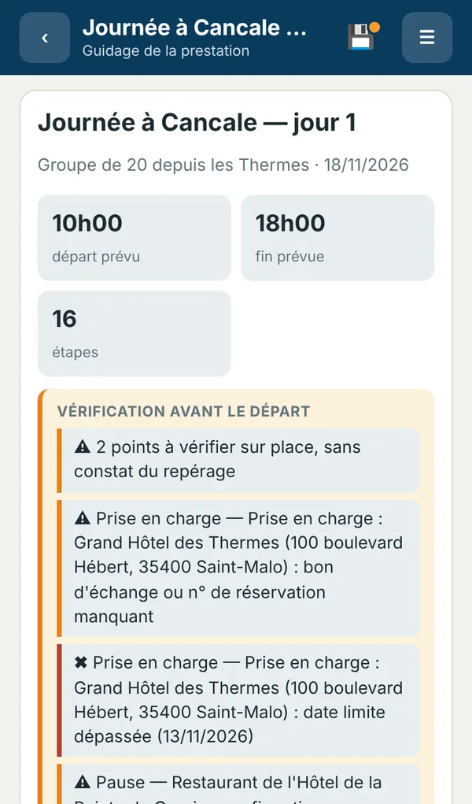
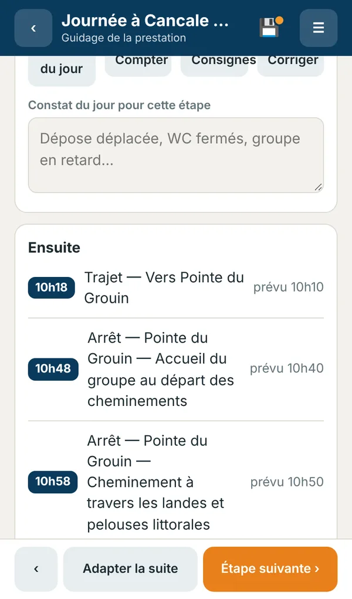
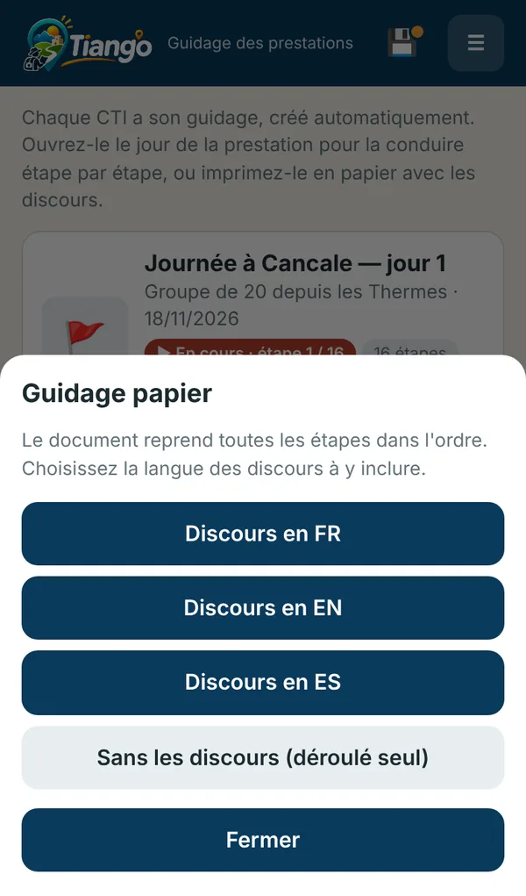
-
Ensuite
Garder la référence et retrouver le bon interlocuteur
Le bilan met le prévu et le réel côte à côte. Vous cochez ce que vous reportez dans le CTI.
- Les constats du jour sont proposés d'office ; les durées réelles ne le sont pas, une journée exceptionnelle n'a pas à remplacer le prévu.
- Chaque réalisation est conservée dans l'historique du CTI.
- L'annuaire retrouve un chauffeur, un restaurant, un hébergement en un geste, et le numéro corrigé l'est partout.
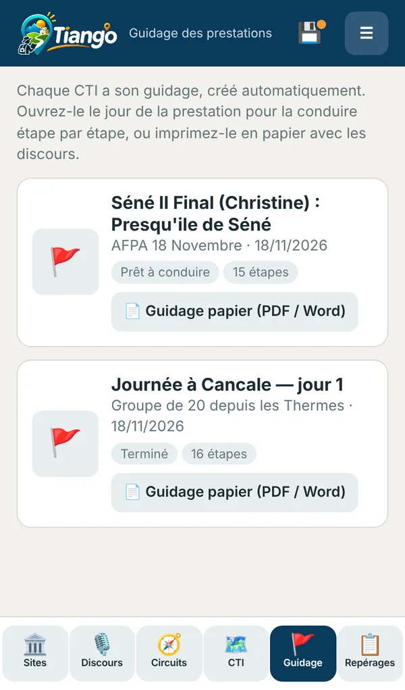
Construit sur de vrais dossiers de guide
Les écrans de cette page montrent des dossiers réels, préparés pour des visites en Bretagne. Voici ce que chacun contient une fois dans Tiango.
-
Pointe du Grouin, Cancale
Un site, sept étapes, trois formules.
- 7
- étapes, de 10 à 15 minutes
- 3
- formules, de 1 h 15 à 1 h 30
- 75
- minutes de déjeuner, placées après la 5e étape
-
Une journée à Cancale
Trois sites en une journée, de la prise en charge à Saint-Malo à la fin de prestation.
- 16
- lignes dans le CTI
- 62
- kilomètres
- 12 h 15
- horaire impératif du déjeuner
-
Excursion à Séné
Cinq sites repérés dans une même sortie.
- 5
- sites, une rubrique chacun
- 11
- photos rangées par étape sur un seul site
- 1
- compte-rendu Word ou PDF
-
Dol-de-Bretagne
La cathédrale, le Cathédraloscope et le Mont Dol réunis sous un même lieu.
- 3
- sites, chacun avec sa fiche d'accessibilité
- 3
- langues pour le discours
Essayer d'abord, puis une licence annuelle
Vous ouvrez Tiango et vous travaillez tout de suite, sans compte. La licence lève les limites de l'essai.
- L'essai
- Complet dans ses fonctions, limité en volume : 3 sites à visiter, 1 circuit, 2 CTI, 1 discours, 1 budget, 1 repérage de circuit et 5 prestataires dans l'annuaire. Ce que vous avez saisi reste à vous, et rien n'est supprimé quand la limite est atteinte.
- La licence
- Une licence est annuelle et nominative. Elle prend la forme d'une clé que vous collez dans le menu de l'application. Elle est vérifiée sur l'appareil, sans serveur et sans réseau.
- Obtenir une clé
- Le tarif et les conditions vous sont donnés sur demande. Écrivez à contact@tiango.fr en indiquant le nom à inscrire sur la licence.
Vos dossiers restent chez vous
Tiango n'a ni serveur ni compte. Tout ce que vous saisissez est enregistré dans votre appareil, et seulement là.
- Sans réseau
- Après une première ouverture, l'application se lance et enregistre sans connexion. Le menu indique si elle est prête.
- Un témoin d'enregistrement
- Une coche confirme que la saisie est écrite. Si l'appareil refuse d'enregistrer, Tiango garde la saisie à l'écran et vous demande quoi faire avant de quitter.
- Une sauvegarde en un fichier
- Pour changer d'appareil ou vous protéger d'une perte, vous exportez un fichier et vous le réimportez. Il n'y a pas de synchronisation automatique entre vos appareils.
- Un historique de vos prestations
- Chaque conduite terminée est gardée avec ses heures réelles, ses constats et ses comptages, tant que vous ne supprimez pas le CTI.
- Une corbeille de trente jours
- Une fiche supprimée par erreur se restaure depuis le menu.
- Ce que cela vous demande
- Sauvegarder régulièrement : un téléphone perdu emporte ce qui n'a pas été exporté. Le fichier de sauvegarde n'est pas chiffré.
Questions fréquentes
Faut-il installer quelque chose ?
Non. Tiango s'ouvre dans le navigateur. Sur iPhone et iPad, ajoutez-le à l'écran d'accueil depuis le bouton Partager de Safari : il se lance alors comme une application et ses données sont mieux protégées.
Quelle différence entre un lieu, un site, une étape et une formule ?
Le lieu est la ville ou la région. Le site à visiter est ce que vous faites visiter ; sa fiche (accessibilité, horaires, accès) lui appartient. Une étape est un point du site où le groupe s'arrête. Une formule assemble des étapes du site dans un ordre et pour une durée. Le discours est le texte que vous dites, un module par étape.
Comment fonctionne la licence ?
Vous recevez une clé nominative valable un an, que vous saisissez dans le menu de l'application. Sa validité se vérifie sur l'appareil, sans connexion. À l'échéance, vos dossiers restent consultables et exportables : seule la création au-delà des limites de l'essai est bloquée.
Sur quels appareils fonctionne-t-il ?
Sur téléphone, tablette et ordinateur, avec un navigateur récent. Il est pensé d'abord pour le téléphone, tenu d'une main sur le terrain.
Comment retrouver mes dossiers sur mon ordinateur ?
Vous sauvegardez depuis le téléphone, vous transmettez le fichier (AirDrop, messagerie, clé), puis vous l'importez sur l'ordinateur. Si une version plus récente existe déjà sur l'appareil, Tiango vous le dit avant de remplacer quoi que ce soit.
L'intelligence artificielle est-elle intégrée ?
Non. Tiango prépare une consigne au bon format, qui demande à l'IA de citer ses sources et de laisser vide ce qu'elle ne peut pas vérifier. Vous la copiez dans l'assistant de votre choix, puis Tiango importe la réponse. Rien n'est envoyé par Tiango. Même avec des sources, une IA peut se tromper : revérifiez toujours avant de dire quoi que ce soit à un groupe.
Tiango calcule-t-il les marées ou la TVA ?
Non. Les marées se saisissent à la main. Le lever et le coucher du soleil se calculent d'un bouton. Le budget donne des montants sans traitement de la TVA.
Où en est le produit ?
Tiango est en phase pilote. Il a été vérifié par des tests automatisés ; les essais sur le terrain sont en cours. Vos retours comptent : écrivez-nous.